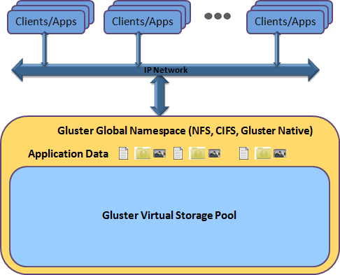
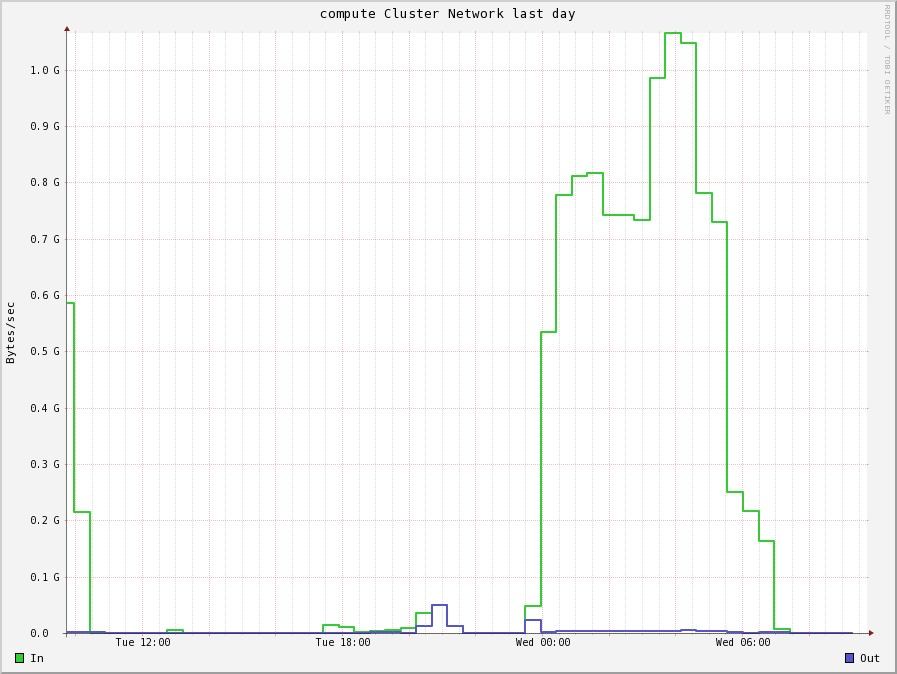

<!doctype html>
<html lang="en">

	<head>
		<meta charset="utf-8">

		<title>Research Computing at ILRI, Nairobi</title>

		<meta name="description" content="Infrastructure, tools, and lessons learned">
		<meta name="author" content="Alan Orth">

		<meta name="apple-mobile-web-app-capable" content="yes" />
		<meta name="apple-mobile-web-app-status-bar-style" content="black-translucent" />

		<meta name="viewport" content="width=device-width, initial-scale=1.0, maximum-scale=1.0, user-scalable=no, minimal-ui">

		<link rel="stylesheet" href="css/reveal.css">
		<link rel="stylesheet" href="css/theme/moon.css" id="theme">

		<!-- Code syntax highlighting -->
		<link rel="stylesheet" href="lib/css/zenburn.css">

		<!-- Printing and PDF exports -->
		<script>
			var link = document.createElement( 'link' );
			link.rel = 'stylesheet';
			link.type = 'text/css';
			link.href = window.location.search.match( /print-pdf/gi ) ? 'css/print/pdf.css' : 'css/print/paper.css';
			document.getElementsByTagName( 'head' )[0].appendChild( link );
		</script>

		<!--[if lt IE 9]>
		<script src="lib/js/html5shiv.js"></script>
		<![endif]-->

	</head>

	<body>

		<div class="reveal">

			<!-- Any section element inside of this container is displayed as a slide -->
			<div class="slides">
                
<section data-markdown>
    <script type="text/template">
        ## Research Computing at ILRI
        *Infrastructure, tools, and lessons learned*

        

        [@mralanorth](http://twitter.com/mralanorth)

        December 14, 2013

        Uganda GNU/Linux Users Group
    </script>
</section>
<section>
    <section data-markdown>
        <script type="text/template">
            ## Background

            

            - [International Livestock Research Institute](http://ilri.org) (ILRI)
            - Lots of lab science (beakers! reagents!)
            - Lots of social science (value chains! gender! surveys!)
            - Not really my area...
        </script>
    </section>
    <section data-markdown>
        <script type="text/template">
            ## Lots of data

            

            Bioinformatics and Geoinformatics have increasing data storage and processing needs
        </script>
    </section>
</section>
<section>
    <section data-markdown>
        <script type="text/template">
            ## Infrastructure
        </script>
    </section>
    <section data-markdown>
        <script type="text/template">
            ## We build our own

            [Rackservers.com](https://rackservers.com) is like McDonald's!

            <br/>

            - Supermicro-based chassis/boards
            - Intel Sandy Bridge-based Xeons
            - Intel X540 NICs
            - No GPUs

            <br/>
            We've got six machines like this
        </script>
    </section>
    <section data-markdown>
        <script type="text/template">
            ## Computing

            Three compute nodes:

            - 88 cores
            - 500GB RAM

            <br/>
            Nothing to write home about!
        </script>
    </section>
    <section data-markdown>
        <script type="text/template">
            ## Storage

            Three storage nodes:

            - 16GB RAM (each)
            - 8 cores (each)

            <br/>
            Probably overkill, but we can cache (and scale!)
        </script>
    </section>
    <section data-markdown>
        <script type="text/template">
            ## Gluing it all together

            Brand new 10GbE [Arista 7050T](http://www.aristanetworks.com/products/7050series/7050t) (top)

            

            Old HP 1GbE something or other (bottom)
        </script>
    </section>
</section>
<section>
    <section data-markdown>
        <script type="text/template">
            ## Building a homogeneous computing environment
        </script>
    </section>
    <section data-markdown>
        <script type="text/template">
            ## Everywhere

            

            User IDs, apps, and data should be available everywhere*

            <br/>
            *for some definitions of "everywhere"
        </script>
    </section>
    <section data-markdown>
        <script type="text/template">
            ## Users and groups

            
            
            

            Consistent UID/GIDs across systems:

            <br/>

            - LDAP + SSSD == winning
            - 389 LDAP works **great** with CentOS
            - SSSD is simpler than pam_ldap and does caching
            - Just do it
        </script>
    </section>
    <section data-markdown>
        <script type="text/template">
            ## Apps and data

            Globally-available apps/data:

            <br />

            - NFS could work
            - ... but doesn't scale out/up
            - GlusterFS does!
        </script>
    </section>
</section>
<section>
    <section data-markdown>
        <script type="text/template">
            ## GlusterFS

            

            - Cluster filesystem from Red Hat
            - Scale "out", not "up"
            - Works GREAT on CentOS
        </script>
    </section>
    <section data-markdown>
        <script type="text/template">
            ## Gluster in a nutshell

            

            - Abstraction of backend storage (filesystems, technology, etc)
            - Global namespace for mounts
            - Clients can use NFS, CIFS, "native" client (FUSE)
            - FUSE client is moar fun (replication, distribution, etc)!
        </script>
    </section>
    <section data-markdown>
        <script type="text/template">
            ## How we Gluster

            - Two of the three storage nodes are for science data
            - GlusterFS is replicated at application layer
            - Clients mount using FUSE client

            <br/>

            ```
            [aorth@compute0]$ mount
            ...
            wingu1:homes on /home type fuse.glusterfs (rw,allow_other,max_read=131072)
            wingu0:apps on /export/apps type fuse.glusterfs (rw,allow_other,max_read=131072)
            wingu1:data on /export/data type fuse.glusterfs (rw,allow_other,max_read=131072)
            ```

            Consistent namespaces across all compute nodes!

            <br/>

            - GlusterFS replication is essentially application-layer RAID1
            - Similar perf characteristics to RAID1 (reads are ~2x faster)
        </script>
    </section>
    <section data-markdown>
        <script type="text/template">
            ## It's fast!

            Doing some BLASTing against large sequence databases (WGS)

            

            - Writes are fast, but not as
            - Our disk arrays are definitely the bottleneck now (yay?)
            - 1GbE is "fine", but you really should think of 10GbE or IB
        </script>
    </section>
</section>
<section>
    <section data-markdown>
        <script type="text/template">
            ## Other tools

            

            GlusterFS forms the backbone, but these are important too!
        </script>
    </section>
    <section data-markdown>
        <script type="text/template">
            ## Rapid provisioning

            "rapid" is important, but "reproduceable" is too!

            <br/>

            - Use CentOS kickstarts (or similar)
                - PXE boot your systems to a known state
                - These [secure kickstarts](https://github.com/alanorth/securekickstarts) are an awesome base
            - Use ansible to orchestrate infrastructure
                - Use ansible to describe roles and orchestrate infrastructure
                - I wrote about [managing clusters with ansible](http://mjanja.co.ke/2013/08/managing-research-computing-clusters-with-ansible/)
        </script>
    </section>
    <section data-markdown>
        <script type="text/template">
            ## SLURM

            

            - Project from Lawrence Livermore National Labs (LLNL)
            - Manages cluster resources
                - Users request CPU, RAM, node allocations
                - Queues jobs, prioritizes jobs, logs usage, etc
            - Currently in use on 5 of the top 10 computing systems
        </script>
    </section>
    <section data-markdown>
        <script type="text/template">
            ## Environment modules

            Dynamically load support for packages in a user's environment

            ```
            [aorth@compute0: ~]$ which R
            /usr/bin/which: no R in (/export/apps/ilri:/bin:/usr/bin:/usr/local/bin)
            [aorth@compute0: ~]$ module load R
            [aorth@compute0: ~]$ which R
            /export/apps/R/3.0.0/bin/R
            ```

            Makes it easy to support multiple versions:

            ```
            [aorth@compute0: ~]$ module switch R/2.13.0
            [aorth@compute0: ~]$ which R
            /export/apps/R/2.13.0/bin/R
            ```

            - Install once, use everywhere!
            - Simplify system administration
            - Eliminate version conflicts
            - http://modules.sourceforge.net/
            - `yum install environment-modules`
        </script>
    </section>
    <section data-markdown>
        <script type="text/template">
            ## Ganglia

            Monitor the cluster using [Ganglia](http://ganglia.sourceforge.net/)

            

            - Easy to setup (no DB!)
            - Works over multicast UDP ("magic")
            - Doesn't do alerts, but is great for heads-up display
        </script>
    </section>
</section>
<section>
    <section data-markdown>
        <script type="text/template">
            ## Lessons learned
        </script>
    </section>
    <section data-markdown>
        <script type="text/template">
            ## Cat 6 vs Cat 6a

            Cat 6 is probably fine... `iperf`:

            ```
            [  3]  0.0-10.0 sec  11.5 GBytes  9.90 Gbits/sec
            ```

            But you should probably use Cat 6a

            <br/>

            - This isn't fiber, copper is cheap!
            - 10GbE spec recommends Cat 6a for new installations
        </script>
    </section>
    <section data-markdown>
        <script type="text/template">
            ## But what about bonding?

            We tried bonding several 1GbE links... meh.

            <br/>

            - Bonding increases channel capacity, not individual flows
            - HP switches use a Layer 3 transmit hash :(
            - Sucks when your client/server ratio is low
        </script>
    </section>
    <section data-markdown>
        <script type="text/template">
            ## Spare parts

            Parts fail, and replacements are hard to find

            <br/>

            - Buy several spares with every order
            - ie, 2+ spare drives per server
            - ie, 1+ spare power supplies
            - Not a problem if you have a good local supplier
        </script>
    </section>
</section>

			</div>

		</div>

		<script src="lib/js/head.min.js"></script>
		<script src="js/reveal.js"></script>

		<script>

			// Full list of configuration options available here:
			// https://github.com/hakimel/reveal.js#configuration
			Reveal.initialize({
				controls: true,
				progress: true,
				history: true,
				center: true,

				theme: Reveal.getQueryHash().theme, // available themes are in /css/theme
				transition: Reveal.getQueryHash().transition || 'default', // default/cube/page/concave/zoom/linear/fade/none

				// Optional libraries used to extend on reveal.js
				dependencies: [
					{ src: 'lib/js/classList.js', condition: function() { return !document.body.classList; } },
					{ src: 'plugin/markdown/marked.js', condition: function() { return !!document.querySelector( '[data-markdown]' ); } },
					{ src: 'plugin/markdown/markdown.js', condition: function() { return !!document.querySelector( '[data-markdown]' ); } },
					{ src: 'plugin/highlight/highlight.js', async: true, callback: function() { hljs.initHighlightingOnLoad(); } },
					{ src: 'plugin/zoom-js/zoom.js', async: true, condition: function() { return !!document.body.classList; } },
					{ src: 'plugin/notes/notes.js', async: true, condition: function() { return !!document.body.classList; } }
					// { src: 'plugin/search/search.js', async: true, condition: function() { return !!document.body.classList; } }
					// { src: 'plugin/remotes/remotes.js', async: true, condition: function() { return !!document.body.classList; } }
				]
			});

		</script>

	</body>
</html>